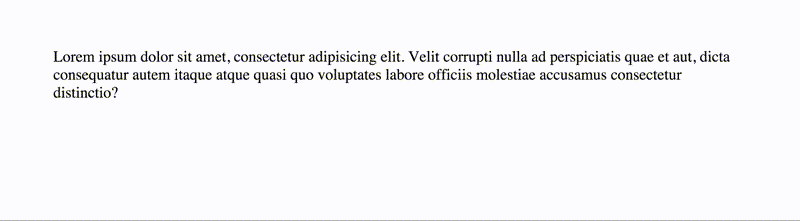

Работаем с Rucksack CSS
Всем привет!
2 месяца назад я полностью отказался от препроцессоров в пользу постпроцессоров. В Stylus, SASS и LESS есть один существенный минус - все они монолитны. В тоже время, PostCSS обладает высокой модульностью и позволяет написать любой плагин для пост-обработки.
В своем блоге я уже использовал несколько плагинов. Например, LOST (построение всевозможных сеток), а так же Rucksack CSS (адаптивная типографика и нативный clearfix).
Rucksack CSS – модуль PostCSS, представляет собой мешок крутых css-штук, которые делают разработку менее болезненной, что особенно важно в столь динамичном мире Front End.
Установка
Устанавливается, как обычно, через NPM.
npm install --save rucksack-css
Интеграция
Можно интегрировать с Gulp, Grunt, Broccoli, Stylus и PostCSS.
Лично я не использовал в блоге Gulp и Grunt, весь код собирает Webpack. Стили обрабатываются с помощью css-loader, style-loader и postcss-loader. Далее, всё выносится в отдельный .css файл с помощью extract-text-plugin.
Часть конфига, которая отвечает за интеграцию PostCSS и Rucksack c Webpack:
var rucksack = require('rucksack-css');
var ExtractTextPlugin = require("extract-text-webpack-plugin");
module.exports = {
module: {
loaders: [
{
test: /\.css$/,
loader: ExtractTextPlugin.extract( 'style-loader', 'css-loader', 'postcss-loader' )
}
]
},
postcss: [
rucksack({
autoprefixer: true
})
],
plugins: [
new ExtractTextPlugin("styles.css")
]
}
Думаю, всё понятно. В блоке postcss мы так же включаем Rucksack Autoprefixer. При последующей сборке все свойства Rucksack будут обработаны, а на выходе мы получим кроссбраузерые стили (styles.css).
Интеграция с Gulp. Используйте gulp-rucksack
var gulp = require('gulp');
var rucksack = require('gulp-rucksack');
gulp.task('rucksack', function() {
return gulp.src('src/styles.css')
.pipe(rucksack())
.pipe(gulp.dest('styles.css'));
});
Интеграция с Grunt. Используйте grunt-rucksack
require('load-grunt-tasks')(grunt);
grunt.initConfig({
rucksack: {
compile: {
files: {
'style.css': 'src/styles.css'
}
}
}
});
grunt.registerTask('default', ['rucksack']);
Интеграция с Broccoli. Используйте broccoli-rucksack
var rucksack = require('broccoli-rucksack');
tree = rucksack(tree, [options]);
Для интеграции со Stylus можно воспользоваться плагином PostStylus
stylus(css).use(poststylus('rucksack-css'))
Возможности
Rucksack полностью модульный, вы можете добавить любую новую возможность, чтобы настроить всё под свои нужды. По умолчанию все основные функции доступны, но вы можете включать/отключать с помощью True False. Небольшой пример:
// Set in build tool
rucksack({
clearFix: false,
autoprefixer: true
});
А вот и список всех дефолтных аддонов:
- responsiveType
- shorthandPosition
- quantityQueries
- alias
- inputPseudo
- clearFix
- fontPath
- hexRGBA
- easings
Дополнительные аддоны. По умолчанию - False
- fallbacks
- autoprefixer
В Webpack-конфиге я включил Autoprefixer, как вы уже видели.
Из всего этого в блоге были зайдействованы clearFix и responsiveType, поэтому ниже будут пару слов и примеры только по этим свойствам. Не менее интересные свойства можно найти в документации Rucksack.
Адаптивная типографика
Адаптивный font-size, который реагирует на размер окна браузера. Всё выглядит так:

Быстрый старт
.foo {
font-size: responsive;
}
Но, наверное, вы захотите добавить минимальный и максимальный размер шрифта.
font-size: responsive [min-font-size] [max-font-size]
font-range: [lower-bound] [upper-bound]
font-range – это новое свойство, которое определяет области просмотра, между которыми шрифт будет адаптивным. Устанавливаются мин / макс значения.
Небольшой пример:
body {
font-size: responsive 12px 21px;
font-range: 420px 1024px;
}
Все значения могут быть в px, rem или em.
Расширенный синтаксис
html {
font-size: responsive;
min-font-size: 12px;
max-font-size: 21px;
lower-font-range: 420px;
upper-font-range: 1280px;
}
Вывод
Мы получаем font-size с использованием Calc, а так же размеры vw. Кроме этого, есть медиазапросы.
html {
font-size: calc(12px + 9 * ( (100vw - 420px) / 860));
}
@media screen and (max-width: 420px) {
html {
font-size: 12px;
}
}
@media screen and (min-width: 1280px) {
html {
font-size: 21px;
}
}
Что эквивалентно:
min-size + (min-size - max-size) * ( (100vw - min-width) / ( max-width - min-width) )
Настройки по умолчанию:
min-font-size: 14px
max-font-size: 21px
lower-font-range: 420px
upper-font-range: 1280px
Нативный ClearFix
В Rucksack есть два новых метода – fix-legacy и fix. Оба этих метода достигают хорошего результата с различной кроссбраузерностью. fix выводит чистый код, это всё что необходимо для IE8+. fix-legacy поддерживает IE6/7.
PostCSS
.foo {
clear: fix;
}
.bar {
clear: fix-legacy;
}
Вывод CSS
/* fix */
.foo:after{
content: '';
display: table;
clear: both;
}
/* fix-legacy */
.bar:before,
.bar:after {
content: '';
display: table;
}
.bar:after {
clear: both;
}
.bar {
zoom: 1;
}